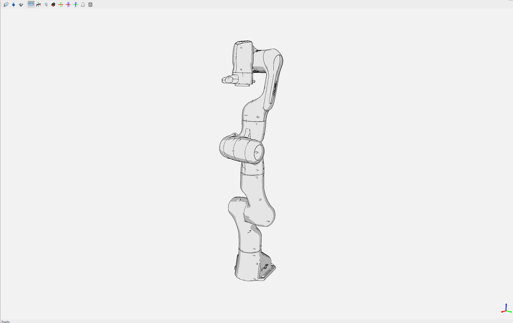

IKFast Kinematics Solver
{kind=link}
In this section, we will walk through configuring an IKFast plugin for MoveIt.
What is IKFast?
IKFast, the Robot Kinematics Compiler, is a powerful inverse kinematics solver provided within Rosen Diankov’s OpenRAVE motion planning software. IKFast automatically analyses any complex kinematic chain for common patterns that allow for an analytic solution and generates C++ code to find them. As a consequence, IKFast provides extremely stable solutions that can be found in a few microseconds on recent processors.
MoveIt IKFast
MoveIt provides tools to generate an IKFast kinematics plugin for MoveIt using the OpenRAVE generated cpp files. This tutorial will step you through setting up your robot to utilize the power of IKFast. MoveIt IKFast is tested on ROS Melodic with a 6DOF and 7DOF robot arm manipulator. While it works in theory, MoveIt IKFast doesn’t currently support >7 degree of freedom arms.
Getting Started
If you haven’t already done so, make sure you’ve completed the steps in Getting Started.
You should have a MoveIt configuration package for your robot that was created by using the Setup Assistant.
OpenRAVE is a planning framework as complex as MoveIt itself and installing it is tricky – particularly because its public documentation is not maintained anymore. Fortunately, personalrobotics provide a docker image based on Ubuntu 14.04 with OpenRAVE 0.9.0 and ROS Indigo installed, which can be used to generate the solver code once.
So the easiest way to run the IKFast code generator is through this docker image. For manual building instructions (tailored towards Ubuntu 16.04), please see the Kinetic version of this tutorial. To follow the recommended, docker-based approach, ensure you have docker installed and started:
sudo apt-get install docker.io
sudo service docker start
The following command will ensure that you can run docker with your user account (adding $USER to the docker group):
sudo usermod -a -G docker $USER
You need to log off/log on in order to actually activate this permission change.
Install the MoveIt IKFast package either from Debian packages or from source.
Binary Install:
sudo apt-get install ros-${ROS_DISTRO}-moveit-kinematics
Source
Inside your catkin workspace’s ./src directory:
git clone https://github.com/ros-planning/moveit.git
rosdep install -y --from-paths . --ignore-src --rosdistro ${ROS_DISTRO}
catkin build
Creating the IKFast MoveIt plugin
To facilitate copy-and-paste, we suggest to define the robot name as an environment variable:
export MYROBOT_NAME="panda_arm"
OpenRAVE uses Collada instead of URDF to describe the robot. In order to automatically convert your robot’s URDF to Collada, you need to provide the .urdf file. If your .urdf file is generated from xacro files, you can generate the URDF using the following command:
rosrun xacro xacro -o $MYROBOT_NAME.urdf $MYROBOT_NAME.urdf.xacro
Select IK Type
You need to choose which type of IK you want to solve for. See this page for more info. The most common IK type is transform6d.
Choose Planning Group
If your robot has more than one arm or “planning group” that you want to generate an IKFast solver for, you need to repeat the following process for each group.
The following instructions will assume you have chosen one <planning_group_name>. Furthermore, you need to know the names of the base link and the endeffector link of the chain to solve for.
Generate IKFast MoveIt plugin
To generate the IKFast MoveIt plugin, issue the following command:
rosrun moveit_kinematics auto_create_ikfast_moveit_plugin.sh --iktype Transform6D $MYROBOT_NAME.urdf <planning_group_name> <base_link> <eef_link>
The speed and success of this process will depend on the complexity of your robot. A typical 6 DOF manipulator with 3 intersecting axes at the base or wrist will take only a few minutes to generate the solver code. For a detailed explanation of the creation procedure and additional tweaks of the process, see Tweaking the creation process.
The command above creates a new ROS package named $MYROBOT_NAME_<planning_group_name>_ikfast_plugin within the current folder.
Thus, you need to rebuild your workspace so the new package is detected:
catkin build
Usage
The IKFast plugin can be used as a drop-in replacement for the default KDL IK Solver, but with greatly increased performance. The MoveIt configuration file should be automatically edited by the generator script but in some cases this might fail. In this situation you can switch between the KDL and IKFast solvers using the kinematics_solver parameter in the robot’s kinematics.yaml file:
rosed "$MYROBOT_NAME"_moveit_config kinematics.yaml
Edit these parts:
<planning_group>:
kinematics_solver: <myrobot_name>_<planning_group>_ikfast_plugin/IKFastKinematicsPlugin
Test the Plugin
Use the MoveIt RViz Motion Planning Plugin and use the interactive markers to see if correct IK Solutions are found.
Updating the Plugin
If any future changes occur with MoveIt or IKFast, you might need to re-generate this plugin using our scripts. To facilitate this, a bash script was automatically created in the root of your IKFast MoveIt package, named update_ikfast_plugin.sh. This regenerates the plugin from the OpenRAVE-generated .cpp solver file.
Tweaking the creation process
The process of creating the IKFast MoveIt plugin comprises several steps, performed one-by-one by the creation script:
Downloading the docker image provided by personalrobotics
Converting the ROS URDF file to Collada required for OpenRAVE:
rosrun collada_urdf urdf_to_collada $MYROBOT_NAME.urdf $MYROBOT_NAME.dae
Sometimes floating point issues arise in converting a URDF file to Collada, which prevents OpenRAVE to find IK solutions. Using a utility script, one can easily round all numbers down to n decimal places in your .dae file. From experience we recommend 5 decimal places, but if the OpenRave ikfast generator takes too long to find a solution (say more than an hour), lowering the accuracy should help. For example:
rosrun moveit_kinematics round_collada_numbers.py $MYROBOT_NAME.dae $MYROBOT_NAME.rounded.dae 5
Running the OpenRAVE IKFast tool to generate C++ solver code
Creating the MoveIt IKFast plugin package wrapping the generated solver
The auto_create_ikfast_moveit_plugin.sh script evaluates the file extension of the input file to determine which steps to run. To re-run the script from any intermediate step (e.g. after having tweaked the accuracy of the .dae file), simply provide the corresponding output from the previous step as input (.dae or .cpp) instead of the initial .urdf file.